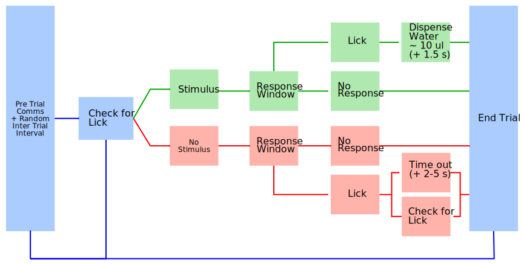

Software Descriptions¶
behaviourbox.ino¶
This program delivers sensory stimulation and opens water valve when the animal touches the licking sensor within a certain time window.
The basic flow of the program is shown below
Files¶
The header files in the behaviourbox folder contain the functions required to run the behaviourbox code. There are currently 7 header files:
global_variables.hLists the variables that are used with global scope. These variables, unless explicitly stated to be internal, can be updated via the serial communications function.
prototypes.hThis file just lists the function names that will be defined in other files. It is organised such that the prototypes are grouped by the file that they come from, under the appropriate heading
timing.hContains the function used to keep all events on time. The Arduino code continuously asks the microcontroller how long it has been running and uses a simple logic of if the current time is > the time an event was supposed to happen : do event
sensors.hContains the thresholding function for converting the analog lick sensor values to binary lick events. This function detects rising edges, applies a simple digital smooth, and will play a short feed back tone if the
audioflag is set toTrue.states.hThis file contains the functions that define the states of the Arduino. All of the nodes in the flow diagram are defined here.
SerialComms.hThis contains a nasty series of if statements and string compares. The
UpdateGlobalsfunction is the backbone of this implementations interactivity. I have hard coded all of the variable names and their string representations into a long series of conditional statements. The basic logic is:Given: "VariableName:Value" Update: VariableName = Value
single_port_setup.h
global_variables.h¶
contains definitions of all variables that are used by multiple functions and expected to have persistent values between the functions. These include the initialisation time, the various timing parameters, as well as any additional options that I have decided to make available.
| variable | description |
|---|---|
| t_init | not settable. This is the variable that the other times a measured relative to |
| t_noLickPer | A time measured in milliseconds. After this amount of time the program will break out of a trial if a lick is detected before the stimulus. If the value is 0 then licks before the stimulus are ignored altogether. |
| trial_delay | Amount of time in milliseconds to delay the start of a trial |
| t_rewardDEL | Amount of time in milliseconds to delay checking for licks after a stimulus |
| t_rewardDUR | Amount of time in milliseconds to check for licks |
| t_trialDUR | Total time in milliseconds that the trial should last |
| t_stimONSET | The time in milliseconds, relative to the trial start time, that the stimulus turns on |
| t_stimDUR | Amount of time in milliseconds to keep the stimulus on |
| timeout | Boolean value. If True enable the recursive timeout punishment |
| debounce | Number of milliseconds to delay between reading the lick sensor value. |
| lickThres | The threshold on the licksensor required to call a lick. This is a number between 0 - 1024 (multiply by 5 V/1024 to get voltage) |
| minlickCount | The number of licks required to count as a response, ie to open the water valve, or to deliver a punishment |
| lickTrigReward | Boolean, set true to enable the reward to be delivered immediatly after the min licks are reached. If false the reward is deliverd at the end of the response duration |
| reward_nogo | Boolean, set true if you want a correct rejection to be rewarded at the end on the reward period |
| mode | {‘-‘, ‘O’, ‘H’} a character to represent the type of mode to run in. If the mode is ‘H’ the system will delver a stimulus and a reward in response to the animal’s lick. If the mode is ‘O’ the system delivers a stimulus and listens for a response |
| waterVol | Amount of time in milliseconds to hold the water valve open for |
| trialType | character code {‘G’ or ‘N’} to determine if this is a go or no go trial. This is used to determine if the water valve will open in response to animal’s lick |
| verbose | Boolean, if True will enable full debug printing...(might be deprecated?) |
| punish_tone | deprecated |
| audio | Boolean, enables auditory cues for the response period |
SerialController.py¶
This python script is a wrapper for communicating with the Arduino program. At it’s heart is a simple loop that reads data transmitted through a serial connection. This is not a necessary component, however I wrote it to make running trials a lot easier.
- The program starts
- The program opens communications with available serial port The
program waits until it gets the arduino is active, and prints all
output until the ready signal is transmitted. Which is
- Status: Ready - The program starts a block
- The program transmits the dict
params, which holds all parameters for a single trial. The condition values get updated; based on the frequencies being sent, all contents ofparamsare transmitted to the behaviour controller. - The program prints the frequencies and the condition to the screen and a random timeout is started.
- The program initiates a trial by sending a literal
"GO"to the behaviour box.- The behaviour box runs one trial, with the parameters set previously
- The program records the output from behaviorCOMs into a dict, which later will be converted to a data frame for analysis.
- The program repeats sending mode flags until all stimuli combinations have been run through.
call signature
usage: SerialControl.py [-h] [-af] [--trials [TRIALS [TRIALS ...]]]
[-lt LICKTHRES] [--verbose] [-restore]
[--repeats REPEATS] [--port PORT] [--ITI ITI ITI]
[-rdur T_RDUR] [-ltr] [--t_stimONSET T_STIMONSET]
[--datapath DATAPATH] [-i ID] [-m MODE] [-to TIMEOUT]
[-nlp NOLICK] [-w WEIGHT] [-td TRIALDUR]
[-rdel T_RDELAY] [-p] [-noise] [-rng] [-lc LCOUNT]
Optional Arguments:¶
These are the arguments which can be supplied to SerialControl.py to modify
it’s parameters. Each paramater has default values which can be set by modifying
the appropriate value in utilities/args.py, see Adjusting Default Arguments.
-
help¶ -h, --helpshow this help message and exit
-
audio¶ -af, --audioprovides audio feedback during the trials this is not to be confused with the noise played to simulate / mask the scanners
-
trials¶ --trials [TRIALS [TRIALS ...]]stimulus durations to run on each trial. That is, the duration of the stimulus pulse.
-
lickthres¶ -lt LICKTHRES, --lickThres LICKTHRESset
lickThresin arduino
-
verbose¶ --verbosefor debug this will print everything if enabled
-
restore¶ -restoreUse to look up previous settings in the comms.ini file
-
repeats¶ --repeats REPEATSthe number of times this block should repeat, by default this is 1
-
port¶ --port PORTport that the Arduino is connected to
-
ITI¶ --ITI ITI ITIan interval for randomising between trials
-
t_rDUR¶ -rdur T_RDUR, --t_rDUR T_RDURset end time of reward epoch
-
lickTrigReward¶ -ltr, --lickTrigRewardflag to allow licks to trigger the reward immediatly
-
t_stimONSET¶ --t_stimONSET T_STIMONSETsets the time after trigger to run the first stimulus
-
datapath¶ --datapath DATAPATHpath to save data to, by default is the current working directory
-
ID¶ -i ID, --ID IDidentifier for this animal/run
-
mode¶ -m MODE, --mode MODEthe mode
habituaton oroperant, by default will look in the config table
-
timeout¶ -to TIMEOUT, --timeout TIMEOUTset the timeout duration for incorrect licks
-
noLick¶ -nlp NOLICK, --noLick NOLICKset
t_noLickPerin arduino
-
weight¶ -w WEIGHT, --weight WEIGHTweight of the animal in grams
-
trialDur¶ -td TRIALDUR, --trialDur TRIALDURset minimum trial duration
-
r_rDELAY¶ -rdel T_RDELAY, --t_rDELAY T_RDELAYset start time of reward epoch
-
noise¶ -noiseplays a noise during trials
-
reward_nogo¶ -rng, --reward_nogoflag to allow a water delivery following no lick of a no go stim
-
lcount¶ -lc LCOUNT, --lcount LCOUNTset
minlickCountin arduino